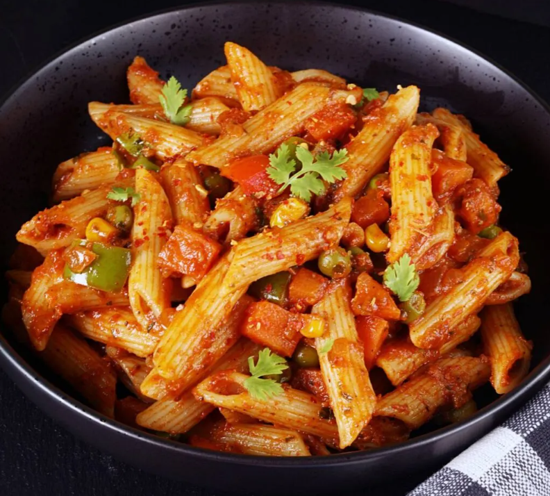

Pasta

Description
Masala Pasta is an Indian-Italian fusion dish that may have originated on the streets of India, selling it as a street food. Not a traditional dish but it has been a favorite & made in almost every Indian home, especially with kids.
That being said, Masala pasta can be eaten by everyone – kids & grown-ups! This Indian style flavorful & delicious masala pasta will be your new favorite! Because you can make it however you like – spicy, less-spicy but flavorsome, creamy, or meaty.
Ingredients
- Pasta - I used farfalle shape to make it look pretty. You can use any shape of your choice.
- Pasta sauce - Tomato puree - used as base and for balance, taste.
- Vegetables - I used carrot, capsicum, peas. You can also use sweet corn, beans, zucchini, spinach.
- Garlic - Fresh garlic adds a nice flavor. You can also add ½ teaspoon of garlic powder instead.
- Onion - This is used as base for the recipe along with tomato.
- Spice powders - Mild but reddish chilli powder for color, garam masala for flavor and making it Indian, black pepper powder and turmeric to make it desi.
- Green chilli - Optional - For extra heat, apart from red chilli powder and black pepper powder. De-seed for less spice, only adding aroma.
- Coriander leaves - Fresh coriander leaves adds a lot of flavor.
- Kasuri methi - Adds a wonderful aroma and taste to the dish.
- Italian herb - you can use anything like oregano, thyme, rosemary or mixed italian herbs too.
- Olive oil - Best for health, use good quality one.
Steps to follow:
- In a cooking pot, bring lots of water with salt to boil (4-5 cups) firstly, for cooking pasta.
If you taste the water, it should be salty like sea water. That's the common reference.
- After that, add pasta and boil until it's cooked al dente. Then drain in a colander and keep aside. Reserve ¼ cup water for later use. In the same hot water, I added the tomato, keep it immersed for 20 seconds. Then take it out, peel the skin and puree it.
- Then, heat half of the oil in a pan and add finely chopped garlic (green chilli if adding) in medium heat. Stir until fragrant without changing the colour much and then add onion. After that, add vegetables (I reserved the capsicum, but you can add along).
- Then once the vegetables are half cooked, in goes all the spice powders. Turmeric, black pepper, chilli powder, garam masala powder. Let oil ooze and the masala becomes shiny, I added capsicum at this stage to retain crunchiness.
- Then add the cooked pasta, reserved pasta cooked water to make sure the masalas coat the pasta well. You can add more water as per your need. Finally, garnish with coriander leaves. Simple and easy Masala pasta is ready to serve!
Enjoy it hot for best taste. But you can definitely pack for lunch box too, it won't disappoint you.